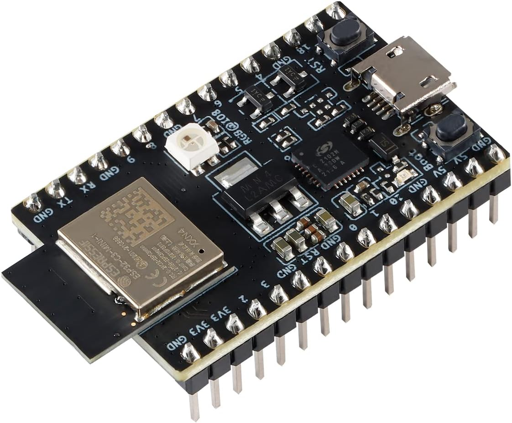
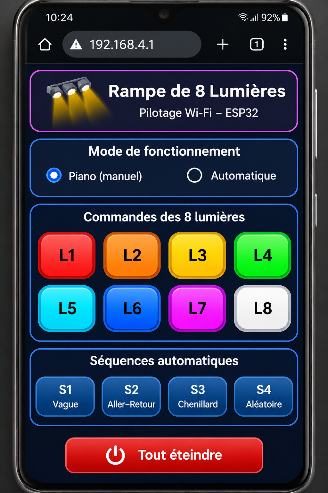

5 — Guirlande lumineuse animée
Votre mission
Vous disposez d’une carte ESP32 Dev Module, d’un module de 8 relais, de 8 douilles et de 8 ampoules colorées fonctionnant sous 12 V. Réalisez une guirlande lumineuse animée pour la vitrine de Noël. L’ensemble est alimenté par une batterie 12 V.
Vous devez concevoir l’interconnexion des composants, choisir la disposition des ampoules dans la vitrine, câbler l’ensemble et programmer l’ESP32 avec l’IDE Arduino pour produire une belle animation lumineuse. Vous réaliserez également une interface web accessible depuis un smartphone connecté au Wi-Fi de l’ESP32.
2 élèves16 heures8 ampoules 12 V8 relaisESP32Wi-Fi + smartphone
1. Matériel disponible — observer et identifier

Programmer la séquence d’animation et piloter les relais.

Commuter séparément l’alimentation de chacune des ampoules.

Constituer les huit points lumineux de la guirlande.

Fixer les ampoules et assurer leur connexion électrique.
Les images présentent le matériel de référence. Vérifier les inscriptions et fiches techniques des composants réels avant le câblage.
2. Organisation du binôme
| Élève | Responsabilité principale | Participation commune |
|---|---|---|
| C1 | Implantation des huit ampoules, schéma électrique, fixation des douilles et câblage 12 V. | Tests de commande, mesures et dossier. |
| C2 | Repérage des broches ESP32, programmation des huit sorties, serveur web et interface smartphone. | Contrôle du câblage, implantation et dossier. |
Les deux élèves participent aux essais, à la validation et à la présentation orale.
3. Planning chronologique — 16 heures
Les travaux de câblage et de programmation se déroulent en parallèle dans le binôme. Les deux élèves participent aux validations.
| Semaine | Durée | Travaux à réaliser | Livrable / validation |
|---|---|---|---|
| S1 — Analyser | 1 h | Identifier ESP32, relais, douilles, ampoules ; relever tensions, courants et bornes. | Caractéristiques relevées. |
| 1 h | Proposer l’implantation des huit lampes et coordonner avec l’équipe Intégration. | Croquis coté. | |
| 2 h | Tester une voie relais et une ampoule sur alimentation protégée ; faire fonctionner le point d’accès Wi-Fi de l’ESP32. | Une lampe commandée + réseau ESP32 visible. | |
| S2 — Concevoir | 1 h 30 | Établir le schéma des huit voies, les protections et le tableau GPIO/relais/ampoules. | Schéma validé. |
| 1 h 30 | Créer une première page HTML avec les huit commandes manuelles et les événements appui/relâchement. | Interface visible sur smartphone. | |
| 1 h | Relier une commande web au serveur ESP32 et vérifier le changement d’état d’une lampe. | Premier échange HTTP validé. | |
| S3 — Réaliser | 1 h 30 | Câbler les huit lampes et relais hors tension ; contrôler les connexions. | Câblage contrôlé. |
| 1 h 30 | Étendre les commandes web aux huit lampes ; gérer les appuis simultanés et les relâchements. | Mode Piano testé. | |
| 1 h | Développer les quatre séquences automatiques et le bouton Tout éteindre. | Modes démontrables. | |
| S4 — Intégrer | 1 h 30 | Installer les douilles dans la vitrine, fixer les fils et raccorder la distribution 12 V. | Guirlande intégrée. |
| 1 h 30 | Tester sur smartphone : manuel, automatique, changement de mode, arrêt ; vérifier les courants et la sécurité. | Fiche de recette signée. | |
| 1 h | Finaliser schéma, code commenté, captures d’écran, mesures et oral de 5 minutes. | Dossier technique et présentation. |
4. Questions de conception
Comment répartir les huit ampoules pour que l’animation soit visible sans gêner le carrousel ni les automates ?
Quelle broche de l’ESP32 commande chaque relais ? Comment repérer les huit voies ?
Quelles séquences d’allumage proposez-vous et quels délais utilisez-vous ?
Comment vérifiez-vous que l’alimentation et les relais sont adaptés ?
5. Nouvelle mission — Piloter la guirlande par smartphone
Le smartphone ne commande pas directement les relais : il affiche une page web fournie par l’ESP32. Chaque action sur cette page transmet une demande au serveur web de l’ESP32, qui décide quelles sorties commander.

5.1 — Cahier des charges de l’interface
| Élément visible | Comportement attendu | Vérification |
|---|---|---|
Adresse 192.168.4.1 | Le smartphone se connecte au réseau Wi-Fi local de l’ESP32 puis ouvre cette adresse dans son navigateur (si cette IP est conservée). | La page s’affiche sans Internet. |
| Mode Piano (manuel) | Un appui sur L1 à L8 allume la lampe correspondante ; le relâchement l’éteint. Plusieurs appuis doivent pouvoir coexister. | Tester deux boutons simultanément. |
| Mode Automatique | Choisir une séquence S1 à S4 ; l’ESP32 anime les huit lampes sans appui continu. | Quatre effets distincts. |
| S1 — Vague | Allumages successifs avec un effet de propagation à définir. | Effet visible et reproductible. |
| S2 — Aller-retour | Déplacement du point lumineux d’une extrémité à l’autre, puis retour. | Inversion du sens. |
| S3 — Chenillard | Déplacement régulier d’un motif lumineux. | Motif identifiable. |
| S4 — Aléatoire | Choix pseudo-aléatoire de lampes ou de motifs. | Succession variée. |
| Tout éteindre | Interrompre immédiatement les animations logicielles et mettre les huit sorties à l’état éteint. | Fonctionne depuis tous les modes. |
5.2 — Architecture de communication à compléter
HTML + JavaScript⇄ Wi-Fi / HTTP ⇄ESP32
Serveur web + programme Arduino→ GPIO →Module 8 relais
Contacts de commutation→8 lampes 12 V
Batterie protégée
Le navigateur envoie une commande (exemple de convention à définir : /lampe?id=1&etat=1). L’ESP32 l’interprète, puis agit sur la sortie associée. La page HTML n’a pas accès directement aux GPIO.
5.3 — Développement guidé, sans correction fournie
- Créer le réseau Wi-Fi. Dans l’IDE Arduino, utiliser la bibliothèque
WiFi.h, choisir un SSID et un mot de passe de test, puis afficher l’adresse IP dans le moniteur série. - Démarrer un serveur web. Étudier le rôle de
WebServer.h, deserver.on(...), deserver.begin()et deserver.handleClient(). Prévoir une route pour la page d’accueil et des routes pour les commandes. - Créer l’interface HTML. Dessiner les huit boutons colorés L1 à L8, le choix du mode, les quatre séquences et « Tout éteindre ». Adapter la page aux écrans de smartphone.
- Ajouter le JavaScript. Étudier
pointerdown,pointerupetpointercancelpour envoyer une commande à l’appui puis au relâchement. Utiliser une requêtefetch()et gérer les échecs de communication. - Traiter les requêtes dans l’ESP32. Lire le numéro de lampe et l’état demandé, contrôler les valeurs reçues, puis appliquer l’état aux relais. Identifier si le module est actif à l’état bas ou haut.
- Programmer les animations. Utiliser des variables d’état et
millis()pour faire évoluer les séquences sans bloquer la réception des commandes web avec de longsdelay(). - Gérer les priorités. Le passage du mode automatique au mode manuel doit arrêter l’animation ; « Tout éteindre » doit rester prioritaire ; le changement de séquence doit être pris en compte sans attendre la fin d’une longue temporisation.
- Valider. Tester d’abord une LED ou un relais sur banc, puis les huit lampes, enfin l’ensemble dans la vitrine.
5.4 — Trame commentée à compléter : ESP32 / Arduino
Cette trame indique l’organisation générale. Les élèves choisissent les GPIO utilisables, les routes HTTP, les états électriques et les algorithmes.
#include <WiFi.h>
#include <WebServer.h>
// À compléter : identifiants du point d'accès
// À compléter : tableau des 8 GPIO et état actif des relais
// À compléter : variables mode, séquence, étape et temps précédent
WebServer server(80);
void setup() {
// 1. Initialiser les sorties dans l'état ÉTEINT
// 2. Démarrer le point d'accès Wi-Fi
// 3. Définir les routes HTTP : page, lampe, mode, séquence, arrêt
// 4. Démarrer le serveur web
}
void loop() {
server.handleClient(); // Recevoir les commandes du smartphone
// Si le mode automatique est actif :
// comparer millis() à la date du dernier changement
// calculer le motif lumineux de la séquence choisie
// appliquer le motif aux 8 sorties
// Sans bloquer longtemps la boucle !
}5.5 — Trame commentée : HTML et JavaScript
<!-- À reproduire huit fois, avec un numéro différent -->
<button type="button" class="lampe" data-lampe="1">L1</button>
<script>
// 1. Sélectionner les boutons de lampes.
// 2. À pointerdown : envoyer « lampe n = allumée ».
// 3. À pointerup ou pointercancel : envoyer « lampe n = éteinte ».
// 4. Pour une requête : étudier fetch('/...').
// 5. Ajouter le choix du mode et des séquences S1 à S4.
// 6. Ajouter le bouton d'arrêt général.
// 7. Éviter qu'un glissement du doigt laisse une lampe allumée.
</script>Aide : pointer permet de traiter souris et écran tactile avec les mêmes événements. Prévoir un état sûr en cas de perte de connexion ou de redémarrage de l’ESP32.
5.6 — Répartition du travail et questions à résoudre
| Élève C1 | Élève C2 | Travail commun |
|---|---|---|
| Implantation, distribution 12 V, schéma et tableau des relais ; tests physiques. | Point d’accès, serveur HTTP, HTML/CSS/JavaScript et gestion des séquences. | Définir le protocole de commandes, tester chaque mode, documenter le montage et présenter les résultats. |
Quelles routes et quels paramètres HTTP votre interface utilisera-t-elle ?
Comment gérez-vous les appuis simultanés, le relâchement et la perte de communication ?
Pourquoi millis() est-il préférable à un long delay() pour le mode automatique ?